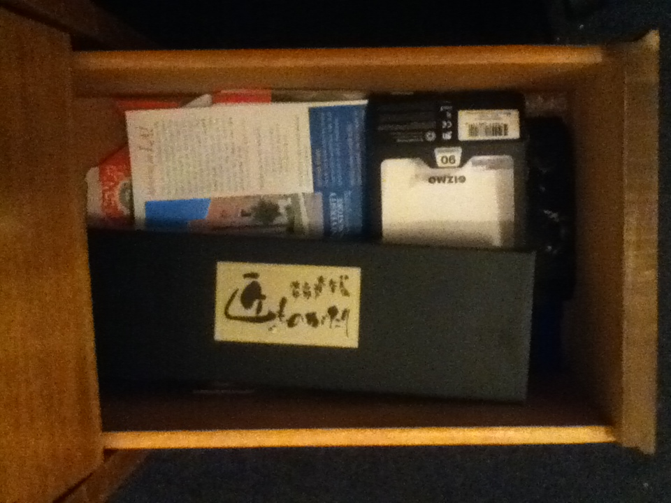
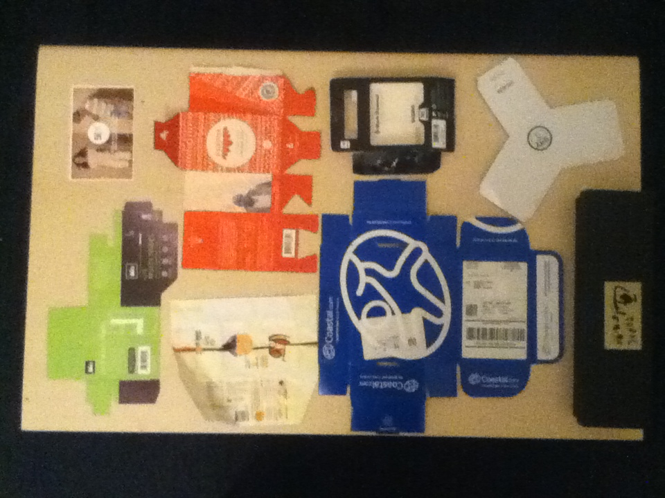

My Plan to Save the World with Design
or at least not ruin it so quickly
10.31.16
Coming up with the design "rules"
Acknowledge your Privilege
I throw my Taco Bell bags in the garbage because I don’t want the people at the recycling center to judge me. I wear clothes from H&M and eat candy made by the Mars Corporation. The first step in this process is understanding that we all come from a place of privilege. This is an important first step for two reasons: First, we must acknowledge our starting point before moving forward. Second, I want to admit my shortcomings. This is not a lecture; it is an AA meeting. We can all do better.


My packaging collection, another guilty pleasure
Use Local Resources
Design Digitally
Repair Technology rather than Replace it
Do Work that is Good
Work Pro-bono for a Non-profit/Just Cause/Local-super-hero 4 Hours a Week
Find or Foster a Like-Minded Community
11.7.16
Coming up with the design "rules" (Cont'd)
Acknowledge your Privilege
Use Local Resources
The first reason for this is obvious: You are part of a community. Unless you are designing from the South Pole, a huge number of people will interact with your design. That’s the point, right? So, invest in that community. Find a printer who will work with you, so that when a client has no ideas for how to go to print with your green, super-decomposable, re-useable hemp business card design, you will have a plan. Second, local resources lead to local solutions. You know when your cat chews through your laptop computer cable even though you said not to! Eleven times, Pickles! And when you buy a new one that comes with six different adapters for different laptops. That’s a universal solution and those are busted. So, solve design problems for the community you are a part of by using recourses from the community you are a part of.
Design Digitally
I’m not sure if this is a valid rule, yet. Maybe the power required to create and power our devices is just as harmful as the creation and throwing-away of physical materials. But, just as there are solutions to offset the damage done by physical materials, so are there ways to offset the carbon footprint of designing with a device. For instance, use social media marketing to reach users, rather than printing a mailer that will probably be thrown away.
Repair Technology rather than Replace it
Most digital devices have a longer lifespan than we give them credit for. Computers are full of hazardous waste, so it’s important to keep them from going into the ground. This is an area with lots of room for growth. Did you know only 2% of phones are recycled? Computers have a similarly low recycle rate. If you must move on to a new piece of hardware, pass on your old equipment and give it a new life. Leave an old copy of adobe on there. You might inspire the next generation of designers.
Do Work that is Good
No, you don’t need to recreate every piece of branding just because St. Patty’s Day is around the corner and the massage therapy place you work with doesn’t have any green on their logo. Do work that is good. I keep running across the same sentiment in my research for this project: Bad design is waste. Make your work good, versatile, strong, and timeless. Trends and season-based design are a waste of your time and feel disingenuous to the user.
Work Pro-bono for a Non-profit/Just Cause/Local-super-hero 4 Hours a Week
Got this one from Aaron Draplin, but I think he got it from someone else. Maybe Sagmeister? Anyway, the title speaks for itself and I’ll add more when I have done some of this kind of work. I am convinced that doing this will create substantial returns on new business and connection. But even if it doesn’t, you shouldn’t need a reason to do the right thing and help someone who is trying to make the world, or at least the neighborhood, a better place.
Find or Foster a Like-Minded Community